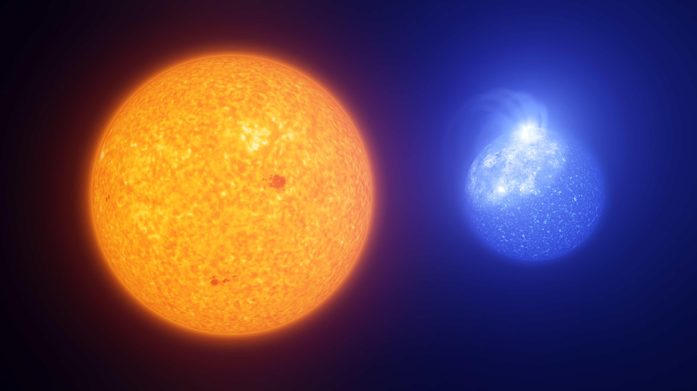

A subdwarf is a star that sits below the main sequence on the Hertzsprung–Russell diagram, typically 1.5 to 2 magnitudes fainter than a main-sequence star of the same spectral type. Subdwarfs are assigned luminosity class VI in the Yerkes (MKK) spectral classification, and are identified by the prefix "sd" in their spectral notation (for example, sdM1 or sdB). Gerard Kuiper introduced the term in 1939 to describe stars whose spectra did not fit neatly into existing categories.

ESO/L. Calçada, INAF-Padua/S. Zaggia
Despite sharing a name and a position on the HR diagram, the two main families of subdwarfs are physically unrelated. They were grouped together simply because both fall below the main sequence.
Cool Subdwarfs
Cool subdwarfs (types sdG, sdK, and sdM) are old, metal-poor stars that fuse hydrogen much like ordinary main-sequence stars. Their low metallicity, meaning they lack elements heavier than hydrogen and helium, reduces the opacity in their outer layers. This makes the star smaller and hotter for a given mass, and therefore less luminous than a solar-metallicity star of the same spectral type. They also show an ultraviolet excess compared to Sun-like stars of similar colour.
Most cool subdwarfs travel at high velocities relative to the Sun, placing them in the galactic halo or thick disk. These are among the oldest stars in the Milky Way, formed when the interstellar medium was still metal-poor. Kapteyn's Star, an sdM1 subdwarf first noted as a high-proper-motion object in 1898, is one of the nearest known examples. At the lowest masses, cool subdwarfs extend into brown dwarf territory: the first sdL subdwarf was confirmed in 2003, and sdT and sdY classes have since been identified.
Hot Subdwarfs
Hot subdwarfs (types sdB and sdO) are something quite different: they are the exposed helium-burning cores of former red giants that lost their hydrogen envelopes too early. An sdB star sits on the extreme horizontal branch of the HR diagram, fusing helium in its core at temperatures of 20,000–40,000 K. An sdO star is further evolved, burning helium in a shell at 40,000–100,000 K. Both types have masses around 0.5 M☉ and radii of only 0.15–0.25 R☉.
Their remaining hydrogen envelopes, roughly 1% of the star by mass, are too thin to support hydrogen shell burning. This prevents them from climbing the asymptotic giant branch, and they instead evolve directly toward the white dwarf cooling track. About half of all sdB stars are in close binary systems, where stripping of the hydrogen envelope by a companion during a common-envelope phase or Roche-lobe overflow is the most likely formation route. Single hot subdwarfs may instead form from the merger of two helium white dwarfs.
Because hot subdwarfs are so luminous in the ultraviolet, large populations of them explain the "UV upturn", the puzzling ultraviolet excess seen in elliptical galaxies and globular clusters. Some of the tightest sdB binaries, with orbital periods as short as 20 minutes, are strong gravitational wave sources that will be detectable by the future LISA mission.